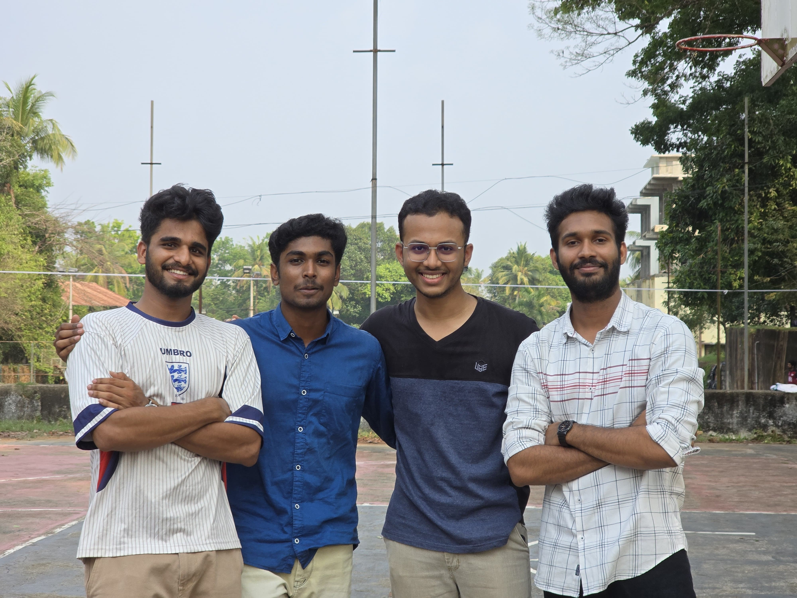
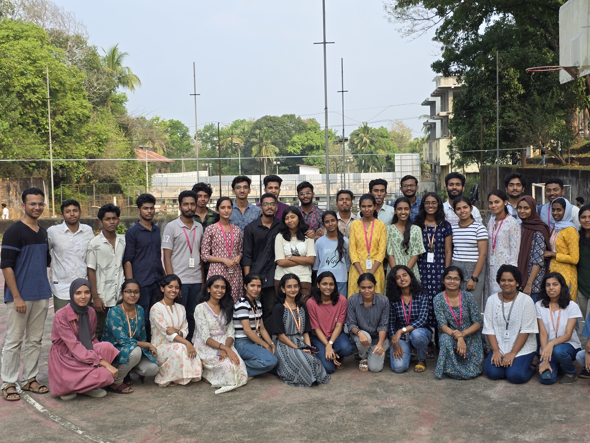

Hello, I'm
Austine Mangan
Operations Strategist / Mech Design Engineer / Future MBA Aspirant.

I am a final-year Mechanical Engineering student at Mar Athanasius College of Engineering with a track record of leading large, multi-stakeholder operations. My experience bridges the gap between deep technical rigor and strategic, cross-functional management.
Technically, I excel in end-to-end CAD design and Finite Element Analysis (FEA) using tools like SolidWorks and ANSYS. On the operational side, I've managed budgets, directed a 400-member volunteer unit, and successfully executed national-level engineering competitions and conferences.
Ultimately, I am targeting roles that leverage my hybrid skill set—bridging engineering precision with strategic operations—guided by my long-term ambition to pursue an MBA from a top global institution.
CAD & CAE
Volunteers Managed
Delegate MUN Organised
Member Execom Directed

Oversee strategic planning and team coordination across 6+ concurrent engineering project teams and national-level automotive competitions. Manage inter-team dependencies, resource conflicts, and event delivery timelines while acting as the primary liaison for institutional forums.


Directed operations for a 400-member MACE unit of the National Service Scheme, focusing on community-centric engineering and social welfare. Spearheaded large-scale initiatives including rural infrastructure projects and health camps.


Managed end-to-end operations for a 200+ delegate conference, overseeing logistics, scheduling, and contingency planning.Directing a 50+ member multi-departmental volunteer team and optimized resource allocation and vendor negotiations to deliver the event 15% under budget.

Led digital branding and cross-platform outreach for the National Tech Fest, managing a multi-member team to drive massive engagement, footfall, and corporate participation.




Led the technical and administrative functions of the ISTE Student Chapter, focusing on bridging the gap between academic theory and industry practice. Curated and executed a series of workshops and technical symposiums covering high-demand skills like CAD and Robotics.


Led end-to-end 3D modelling and detailed drafting of ATV chassis using SolidWorks, ensuring dimension accuracy and SAE rule compliance. Coordinated fabrication from CAD drawings meeting tight competition deadlines while managing a multi-tiered engineering squad.
Mechanical Dept, MACE 2026

MACE 2026

SAE National Convention 2024


Project Objective: Design and develop a hybrid aerial-ground robotic platform for Search and Rescue (SAR) that maximizes operational endurance through mechanical morphing and active terrain adaptation.
Core Technical Contributions:
• Morphing Architecture: Engineered a unified rack-and-pinion transmission system that transitions four appendages between flight and roving modes using a "one-to-many" actuator strategy to minimize weight and complexity compared to multi-jointed systems.
• Active Leveling (UTLS): Developed a sensor-driven Uneven Terrain Landing System utilizing an ESP32 and BNO055 9-DOF sensor to execute a 100Hz PID control loop, achieving stable horizontal attitude on slopes up to 20° within a 5-second convergence window.
• Aerodynamic Optimization: Conducted iterative CFD simulations in SolidWorks to refine wheel-spoke geometry, reducing recirculation intensity by 9.0% to minimize parasitic drag and optimize thrust efficiency during hover.
• Structural Verification: Performed static structural analysis in ANSYS on 3D-printed PLA components, verifying a Factor of Safety (FOS) of 2.375 for the morphing link under worst-case 3G hard-landing loads.
• System Integration: Correlated Multi-Body Dynamics (MBD) simulations with prototype testing to validate stable autonomous transitions within a 2.5s window, ensuring center of gravity (CoG) stability throughout the flight-to-rove sequence.


Project Objective: Design and fabricate a high-performance off-road chassis capable of withstanding extreme dynamic loads while maintaining a minimal weight footprint for national-level competition.
Core Technical Contributions:
• Structural Design: Developed a 3D space-frame in SolidWorks using AISI 4130 Chromoly. Optimized triangulation to withstand impact forces exceeding 5g.
• FEA Optimization: Conducted Front, Side, and Roll-over impact simulations in ANSYS. Through iterative design, achieved a 17% weight reduction (35kg final weight) while maintaining required torsional rigidity.
• Precision Fabrication: Engineered custom jigs and fixtures to maintain a <2mm tolerance across the frame, ensuring perfect alignment for suspension hardpoints and drivetrain integration.
• System Integration: Optimized engine packaging and cockpit ergonomics, balancing driver safety with a low Center of Gravity (CoG).
• Validation: Correlated simulation data with real-world testing, refining rear-brace geometry to improve cornering stability and reduce frame stress during high-speed jumps.
Dassault Systèmes
In ProgressMicrosoft
In Progress